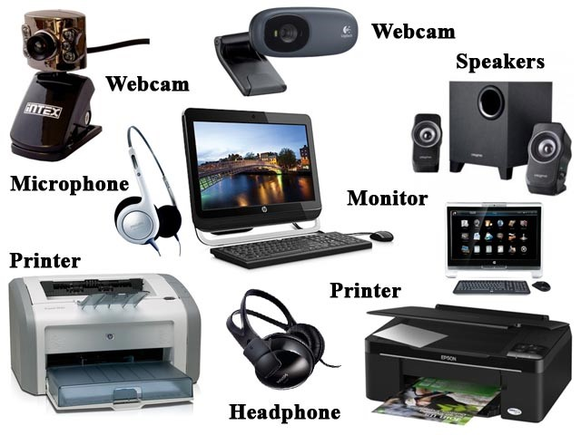

Izlazni uređaji podatke iz računala pretvaraju u oblik prihvatljiv okolini. Ta okolina mogu biti ljudi, pa su to onda prikazi u vizualnom ili zvučnom obliku, ili strojevi ako su prikazi u obliku električnih veličina kao što su napon ili struja. Neovisno o obliku u koji ti uređaji pretvaraju podatke njihova zadaća je ista, a to je da brzo, jeftino i djelotvorno pretvore digitalne električne signale iz računala u oblik prihvatljiv okolini. Svako računalo ima barem jedan izlazni uređaj, ali češće i više njih. Postoje puno različitih izlaznih uređaja sa različitom namjenom, tehnologijom izrade, cijenom itd.
